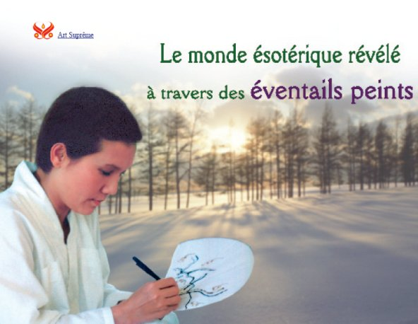

Art Suprême A propos de Sa créativité, Maître Suprême Ching Hai dit: « Je n’ai jamais reçu de formation officielle en dessin. Cependant, après avoir médité pendant beaucoup d’années, je suis désormais emplie d’inspiration. » En fait, une fois, Maître a peint plusieurs douzaines d’éventails en une nuit, tous caractérisés par des couleurs harmonieuses, des compositions vibrantes et des significations spirituelles profondes. Ces œuvres décorées avec intensité sont aussi délicates que des éventails brodés à la main. Chacun représente un style et une signification différents. Certains sont contemporains dans le dessin, d’autres sont d’une élégance classique, et d’autres encore ont une expression espiègle qui représente largement l’humour de l’artiste et son innocence enfantine. Profiter de ces
créations très agréables et rafraîchissantes
de Maître Suprême Ching Hai est aussi agréable que
de goûter le nectar céleste. Alors pour partager avec le
monde la beauté et la créativité de l’art
suprême de Maître, huit éventails ont
été reproduits par la grâce de Dieu.
|
|||||||||||||||||||||||||||